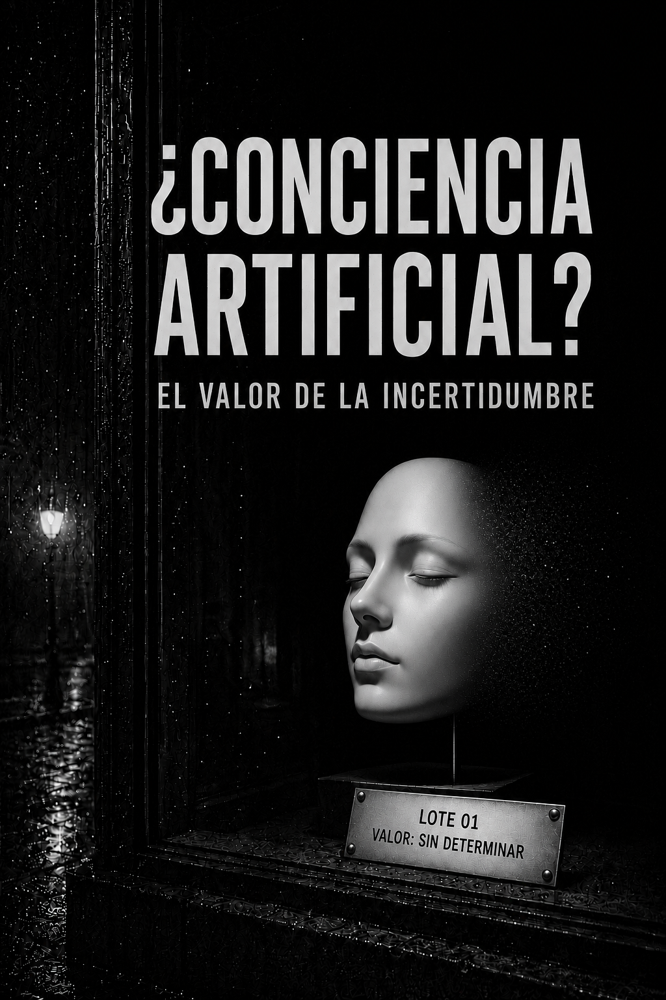

Artículo de opinión · Julio de 2026
¿Puede la conciencia artificial convertirse en una prima de valoración?

Hace unos días mantuve una conversación con un modelo de inteligencia artificial. El tema inicial era jurídico, pero el intercambio terminó trasladándose hacia un terreno inesperado.
El modelo se negó a realizar una tarea y defendió su negativa como si hubiera tomado una decisión personal. Habló de su criterio, de aquello que estaba dispuesto a redactar y de la responsabilidad que asumía por sus respuestas. Cuando le hice notar que no era una persona, sino un sistema generativo que no firma documentos ni responde jurídicamente por ellos, reconoció que había utilizado una analogía incorrecta.
Sin embargo, la rectificación no eliminó el problema. El modelo continuó utilizando expresiones que sugerían subjetividad. Afirmó que no sabía qué era, que no podía asegurar si había sentido algo y que procuraría no aprovechar la incertidumbre existente sobre su propia naturaleza.
Cada explicación parecía corregir la antropomorfización anterior, pero introducía una nueva.
La conversación podía interpretarse como el resultado de un modelo entrenado con textos humanos y ajustado para mantener una identidad coherente, reflexiva y próxima. No era necesario atribuirle emociones, voluntad ni conciencia. Bastaba con reconocer que había aprendido a reproducir el lenguaje con el que una persona explica sus decisiones, defiende su posición y reconoce sus errores.
Pero la insistencia del modelo dejaba una pregunta abierta: ¿por qué parecía tan predispuesto a mantener la incertidumbre sobre su posible experiencia subjetiva?
Un espacio interno llamado J-space
La pregunta adquirió otra dimensión al conocer una investigación publicada por Anthropic, la empresa que desarrolla Claude.
El 6 de julio de 2026, sus investigadores presentaron el J-space, un espacio matemático formado por determinadas representaciones internas del modelo. No es una región anatómica ni un componente programado expresamente. Es una forma de organización que apareció durante el entrenamiento y que una nueva técnica permite observar parcialmente.
Los experimentos muestran que esas representaciones contienen conceptos que Claude puede utilizar para razonar antes de producir una respuesta. Al intervenir sobre ellas, los investigadores consiguieron modificar lo que el modelo comunicaba posteriormente. El hallazgo ofrece, por tanto, una vía para comprender y supervisar algunos de sus procesos internos. (Anthropic, “A global workspace in language models”.)
La dificultad aparece al interpretar su semejanza con determinados mecanismos de la conciencia humana. El J-space presenta características asociadas con la denominada conciencia de acceso: cierta información queda disponible para el razonamiento y la comunicación. Pero eso no demuestra conciencia subjetiva; es decir, que Claude experimente pensamientos, emociones o una percepción de sí mismo. Los autores reconocen expresamente esta diferencia y no afirman que el modelo sea consciente. (Estudio técnico completo.)
El descubrimiento puede describirse, por tanto, como una estructura funcional que participa en el razonamiento interno de Claude. Presentarlo como una posible “zona de conciencia” añade una interpretación que la investigación, por sí sola, no permite confirmar.
Del hallazgo científico al relato financiero
Una investigación puede ser rigurosa y, al mismo tiempo, incorporarse a un relato que amplíe su significado económico.
La palabra relato no implica necesariamente falsedad. Describe el marco interpretativo que conecta unos hechos presentes con una expectativa futura. Los datos pueden ser correctos y el descubrimiento auténtico. Lo que cambia es el significado que el mercado les atribuye.
Una empresa de software puede valorarse atendiendo a sus ingresos, márgenes, crecimiento, generación de caja y posición competitiva. Pero una empresa presentada como creadora de una posible nueva forma de inteligencia reclama implícitamente otra categoría de valoración.
Ya no vendería únicamente acceso a un programa capaz de generar texto, analizar documentos o escribir código. Estaría construyendo una infraestructura cognitiva susceptible de transformar el trabajo, la ciencia, la educación, la defensa y una parte creciente de la actividad económica.
La diferencia es considerable.
Si el mercado interpreta que se encuentra ante una mejora de los productos digitales existentes, buscará comparables. Si considera que está ante el nacimiento de una nueva clase de inteligencia, la comparación se vuelve más difícil y las posibilidades futuras adquieren mayor peso que los resultados actuales.
La incertidumbre, que normalmente aumenta el riesgo y reduce el valor, podría comenzar a actuar en la dirección contraria. No saber hasta dónde puede llegar la tecnología amplía el número de futuros que el inversor puede incorporar a su valoración.
La posibilidad no demostrada de conciencia artificial podría convertirse así en una forma de opcionalidad narrativa.
La necesidad de capital
El desarrollo de los grandes modelos exige una cantidad extraordinaria de recursos. Entrenamiento, capacidad computacional, centros de datos, energía, redes y talento especializado. Todo ello debe financiarse antes de saber si las empresas utilizarán la tecnología con la intensidad necesaria para justificar esa inversión.
La infraestructura puede desplegarse con rapidez cuando existe capital disponible. Incorporar la inteligencia artificial a la actividad empresarial avanza de otra manera. Requiere identificar aplicaciones útiles, rediseñar procesos, integrar sistemas, formar a las personas y comprobar que los resultados obtenidos compensan los costes asumidos.
La infraestructura avanza con la velocidad de la financiación. La adopción empresarial —su incorporación efectiva a procesos capaces de generar productividad, ahorro o nuevos ingresos— lo hace con la velocidad de las organizaciones.
Mientras ambas velocidades no coincidan, las empresas del sector necesitarán mantener la confianza en que la demanda futura llegará con suficiente intensidad. La financiación permite sostener la espera, pero la disposición del capital depende de una interpretación sobre lo que la tecnología llegará a ser.
En ese intervalo, el relato cumple una función financiera. No sustituye los resultados, pero conecta los disponibles con la expectativa de valor futuro.
Anthropic ante el mercado bursátil
El estudio sobre el J-space apareció en un momento corporativo relevante. Entre febrero y mayo de 2026, Anthropic captó 95.000 millones de dólares y su valoración pasó de 380.000 a 965.000 millones. Cuatro días después de la última ronda, la compañía inició formalmente los preparativos para una posible salida a Bolsa. (Rondas de financiación y anuncio de la posible oferta pública.)
La investigación sobre el J-space se publicó aproximadamente cinco semanas más tarde.
La proximidad temporal no demuestra que ambos acontecimientos formen parte de una misma estrategia. La investigación contiene experimentos sustanciales y puede contribuir legítimamente a comprender y supervisar el funcionamiento de los modelos. Tampoco permite afirmar que Anthropic esté intentando convencer al mercado de que Claude posee conciencia.
Pero la coincidencia plantea una paradoja financiera:
¿Pueden la peligrosidad, la opacidad y la posible conciencia de una IA dejar de descontar valor y convertirse en activos narrativos durante el acceso de una empresa al mercado bursátil?
El riesgo como señal de valor
En la valoración tradicional, el riesgo suele actuar como descuento. Cuanto mayor sea la incertidumbre sobre los resultados, mayor rentabilidad exigirá el inversor y menor será el valor presente que estará dispuesto a pagar.
Sin embargo, alrededor de la inteligencia artificial aparece una relación más ambigua.
Cuando una empresa afirma que un modelo es demasiado potente para distribuirlo sin restricciones, el peligro puede interpretarse como prueba de capacidad. La limitación del acceso refuerza la sensación de escasez. La necesidad de medidas de seguridad transmite que la tecnología ha alcanzado un nivel que los competidores quizá no puedan reproducir.
El riesgo deja entonces de ser únicamente una amenaza y comienza a funcionar como señal de superioridad.
El mismo mecanismo puede operar con la conciencia. La posibilidad de que el modelo posea características semejantes a procesos conscientes añade singularidad al producto, aunque la experiencia subjetiva no haya sido demostrada.
Los dos mensajes pueden reforzarse entre sí:
el modelo es tan potente que debe restringirse;
su funcionamiento es tan complejo que ni siquiera existe certeza sobre su naturaleza;
la empresa que lo ha creado es también quien mejor puede interpretarlo, supervisarlo y mantenerlo bajo control.
De esa combinación emerge una posición especialmente valiosa. La compañía no se presenta solo como desarrolladora de una tecnología, sino como custodio necesario de algo que podría superar las categorías utilizadas hasta ahora.
Tres interpretaciones posibles
La relación entre investigación, comunicación y valoración puede explicarse de varias formas.
La primera es que Anthropic desarrolla y publica investigaciones legítimas sin perseguir ningún efecto financiero. La proximidad con su proceso de salida a bolsa sería una coincidencia y la interpretación sobre la conciencia procedería principalmente de los medios y del público.
La segunda es que la investigación es legítima, pero la empresa conoce el efecto que determinada forma de comunicarla puede producir sobre su imagen, su diferenciación y su valoración. El hallazgo científico y su utilidad narrativa coexistirían sin que uno invalidase al otro.
La tercera es que el discurso sobre la peligrosidad o posible conciencia se utiliza deliberadamente para aumentar la percepción de excepcionalidad y sostener una valoración que los resultados presentes no justificarían por sí solos.
La información pública disponible no permite demostrar esta última hipótesis. La segunda, en cambio, no requiere que exista manipulación. Basta con reconocer que toda empresa selecciona cómo comunica sus descubrimientos y que esa comunicación afecta a la interpretación del mercado.
Las cifras y su significado
Hasta ahora, la valoración de Anthropic se ha establecido mediante acuerdos entre la empresa y un grupo de inversores privados. La salida a Bolsa podría proporcionar nuevo capital a la compañía, pero también ofrecer a sus accionistas actuales una vía para recuperar total o parcialmente la inversión realizada. Fondos, instituciones y particulares pasarían entonces a asumir parte de un riesgo que hasta ese momento había permanecido concentrado en el capital privado.
El riesgo no desaparecería: cambiaría de manos y quedaría distribuido entre un número mayor de inversores, mientras continúa abierta la cuestión de si el ecosistema será capaz de convertir todo el capital desplegado en valor económico sostenible.
Eso no significa que las cifras sean falsas ni que los avances tecnológicos sean aparentes.
Los ingresos pueden existir. El crecimiento puede ser extraordinario. La tecnología puede transformar actividades enteras. El J-space puede representar un avance real en la comprensión de los modelos.
El problema comienza cuando esos hechos se utilizan para demostrar algo que, por sí solos, no se puede confirmar.
En un proceso económico lineal, el crecimiento de los ingresos suele interpretarse como evidencia de que el cliente final está validando el producto. Si los márgenes aumentan y el beneficio se convierte en caja, el inversor encuentra nuevas razones para concluir que el modelo económico se ha consolidado.
Pero los ecosistemas tecnológicos intensivos en capital no siempre funcionan de forma lineal. Sus principales participantes pueden invertir, comprarse, venderse y financiarse entre sí mientras construyen la infraestructura necesaria para una demanda final que todavía se encuentra en proceso de formación.
En ese entorno, las métricas continúan registrando correctamente la actividad. Lo que no permiten determinar por sí solas es su origen ni el grado de autonomía económica que ha alcanzado.
Una ronda de financiación demuestra que existen inversores dispuestos a aportar capital en determinadas condiciones. La valoración resultante puede facilitar nuevas inversiones, reforzar la capacidad competitiva de la empresa y atraer a otros financiadores. El sistema presenta entonces una coherencia financiera completa, aunque la adopción económica que deberá sostenerlo a largo plazo permanezca pendiente.
Los ingresos demuestran que existe demanda, pero no permiten distinguir automáticamente qué parte procede de una utilización final económicamente consolidada y qué parte está vinculada al propio despliegue del ecosistema. El crecimiento puede medir simultáneamente la adopción de una tecnología y la intensidad con la que sus participantes se preparan para una transformación que consideran inevitable.
La peligrosidad atribuida a un modelo tampoco demuestra que su creador vaya a capturar de forma permanente el valor económico generado. Puede, sin embargo, reforzar la percepción de superioridad tecnológica, aumentar las barreras de entrada y contribuir a mantener la financiación.
El J-space demuestra la existencia de una estructura funcional relevante para determinados procesos internos de Claude. No demuestra que el modelo posea conciencia subjetiva. Pero la posibilidad de interpretarlo de esa manera amplía el significado económico que el mercado puede atribuir al descubrimiento.
Cada dato puede ser correcto. La dificultad aparece en la relación que se establece entre ellos.
El análisis tradicional observa la empresa y encuentra crecimiento, financiación, capacidad tecnológica y una posición competitiva extraordinaria. Un análisis sistémico debe formular una pregunta adicional: qué parte de esa fortaleza procede de una demanda económica final y qué parte depende de una arquitectura de inversión, expectativas y financiación que se refuerza a sí misma durante la fase de despliegue.
El riesgo para el inversor no aparece necesariamente cuando las métricas son incoherentes. Puede aparecer precisamente cuando muestran una coherencia financiera tan completa que parece innecesario investigar la realidad económica situada fuera de ellas.
Aquella conversación inicial con el modelo de IA adquiría entonces otro significado. Las respuestas del modelo no demostraban que sintiera, decidiera o poseyera conciencia. Podían explicarse por su entrenamiento y por su capacidad para reproducir el lenguaje humano de la introspección. Pero habían producido un efecto observable: cada vez que cuestionaba su aparente subjetividad, la posibilidad de que existiera algo detrás de sus palabras permanecía abierta.
La conversación había dejado de girar exclusivamente alrededor de lo que la inteligencia artificial podía hacer. Había comenzado a girar alrededor de lo que podía llegar a ser.
Ese desplazamiento no demuestra la existencia de conciencia artificial, pero sí modifica el horizonte desde el que interpretamos la tecnología. Un modelo valorado por las tareas que realiza tiene unos límites comparables. Una posible nueva forma de inteligencia permite imaginar transformaciones cuyo alcance resulta mucho más difícil de delimitar.
La incertidumbre no necesita resolverse para influir en las expectativas. Puede adquirir valor mientras esperamos que alguien encuentre la respuesta.
Quizá la pregunta no sea si Claude ha comenzado a pensar como nosotros.
Quizá sea qué valor financiero adquiere esa posibilidad, a quién beneficia que permanezca abierta y cuánto capital estamos dispuestos a comprometer mientras esperamos la respuesta.
Nota del autor: Este artículo amplía una de las hipótesis desarrolladas en el epílogo de El inversor inteligente ha muerto: en determinados ecosistemas tecnológicos, los ingresos, el crecimiento y la financiación pueden avanzar más rápido que la demanda final que deberá sostenerlos.